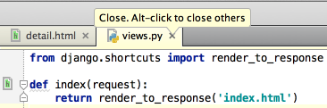

There are two ways of closing all tabs in the editor, except the current one:
First, right-click the editor tab, and choose
Close Others
on the context menu.
Second, keeping the Alt key pressed, click on the editor tab.
